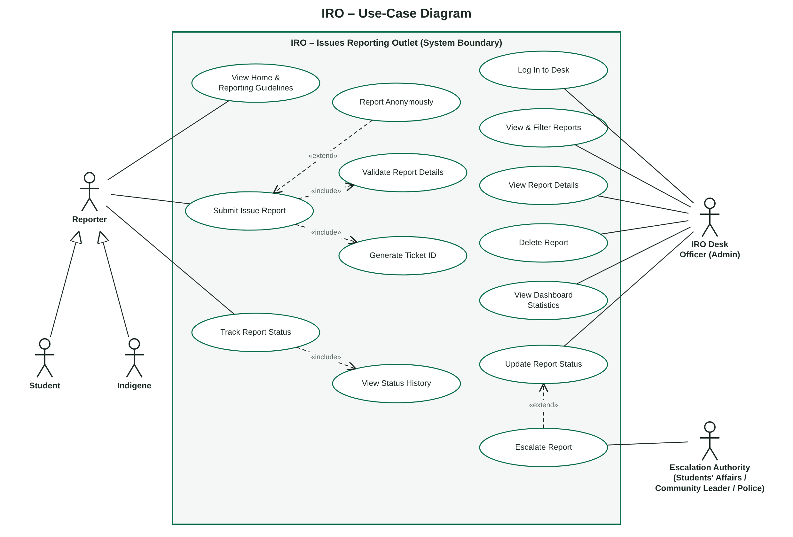
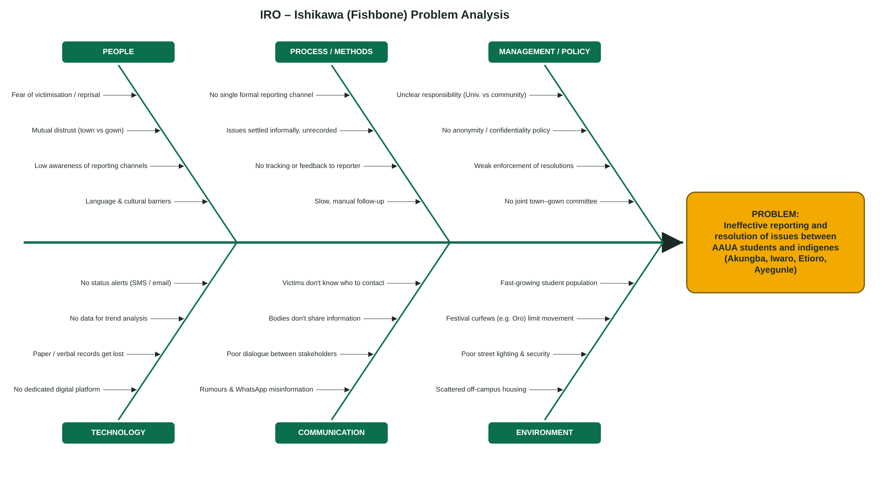

IRO – Issues Reporting Outlet
A web-based system for reporting and resolving issues between
Adekunle Ajasin University, Akungba-Akoko (AAUA) students and the indigenes of
Akungba, Iwaro, Etioro, Ayegunle and neighbouring communities
Version 1.0
CSC426 Weekly Dev – Weekend 3 (01/07/26)
Course lecturer: Dr. O. O. Ajayi
Prepared by: Joshua Omolafe (GitHub: Joshua989)
| Version | Date | Description |
|---|---|---|
| 1.0 | July 2026 | Initial SRS for the IRO mini web interface. |
This document specifies the requirements of IRO (Issues Reporting Outlet), a web-based system through which AAUA students and indigenes of the host communities report issues that affect them, and through which an IRO desk officer reviews, escalates and resolves those reports. It is written for the course lecturer, the project developer, and any future team that extends the system. It describes what the system must do (functional requirements), how well it must do it (non-functional requirements), and how its major components interact.
Relations between AAUA students and the host communities (Akungba, Iwaro, Etioro, Ayegunle and Oke-Oka) are affected by disputes over rent and accommodation, security, land, cultural festivals, sanitation, transport and prices. Today these issues are reported through scattered informal channels (the SUG, community chiefs, WhatsApp groups, the police), many are never reported for fear of victimisation, and reporters rarely learn what happened to their complaint.
IRO provides a single, neutral outlet that:
Out of scope for version 1.0 (the mini interface): SMS/e-mail notifications, file/photo uploads, a server-side database, multiple officer accounts and Yoruba translation. These are listed as future enhancements in Appendix B.
| Term | Meaning |
|---|---|
| IRO | Issues Reporting Outlet – the system specified here. |
| AAUA | Adekunle Ajasin University, Akungba-Akoko, Ondo State, Nigeria. |
| Indigene | A native or long-term resident of Akungba, Iwaro, Etioro, Ayegunle, Oke-Oka or neighbouring communities. |
| Reporter | Any user (student, indigene or other) who submits a report. |
| Desk Officer | The administrator who manages reports on the IRO desk. |
| Escalation Authority | A body to which a report is forwarded: Students' Affairs, SUG, community leaders (Oba/Baale), campus security or police. |
| Ticket ID | Unique report reference in the form IRO-YY-XXXXX, e.g. IRO-26-4F7K2. |
| SRS | Software Requirements Specification. |
| FR / NFR | Functional requirement / non-functional requirement. |
| UI | User interface. |
docs/questionnaire/.docs/ishikawa/IRO_Ishikawa.drawio.docs/use-case/IRO_UseCase.drawio.Section 2 describes the product in general terms. Section 3 shows the architecture and how the major components interact. Sections 4 and 5 list the functional and non-functional requirements. Section 6 covers external interfaces, Section 7 the use cases, Section 8 the data, and Section 9 traces the requirements back to the root causes found in the Ishikawa analysis.
IRO is a new, self-contained web application. Version 1.0 is a static front-end (HTML, CSS,
JavaScript) that runs in any modern browser and stores data in the browser's localStorage.
All data access goes through a single data-layer object (IssueStore), so a later version can
replace browser storage with a server API and database without changing the user interface.
| User class | Description | Technical skill |
|---|---|---|
| Student | Undergraduate or postgraduate student of AAUA, on or off campus. May supply a matric number. | Medium–high; mostly smartphone users. |
| Indigene | Landlord, trader, driver, farmer, chief or other resident of the host communities. Selects their community. | Low–medium; a simple, clear interface is essential. |
| Other reporter | Staff, visitors, traders not from the communities. | Varies. |
| IRO Desk Officer | Staff member (e.g. from Students' Affairs or a joint town–gown committee) who manages reports. | Medium; trained to use the dashboard. |
| Escalation Authority | Secondary actor that receives escalated issues offline; does not log in to v1.0. | N/A |
| Component | Files | Responsibility |
|---|---|---|
| Presentation layer (pages) | index.html, report.html, track.html, admin.html, css/style.css | Displays the UI: home & guidelines, report form, tracking page and admin desk. |
| ReportForm controller | js/report.js | Shows/hides student or indigene fields, collects and validates input, calls IssueStore.create() and shows the ticket ID. |
| Tracker controller | js/track.js | Looks up a ticket ID via IssueStore.findById() and renders status and history (no personal data shown). |
| AdminDesk controller | js/admin.js | Handles login/logout, statistics, search/filter, detail view, status updates, escalation and deletion. |
| IssueStore (data layer) | js/store.js | Single point of access to data: create, read, find, update status, delete, statistics, ticket ID generation. |
| IRO configuration | js/store.js | Holds categories, communities, statuses, severities and the demo passcode. |
| Storage | Browser localStorage (key iro_issues) | Persists the list of issues as JSON. Replaced by a server database in future. |
+-----------+ +----------------+ +-------------------+
| Reporter |---->| report.html |---> ReportForm --->| |
| (Student/ | +----------------+ validate() | |
| Indigene) | +----------------+ | IssueStore | +--------------+
| |---->| track.html |---> Tracker ------>| (store.js) |<--->| localStorage |
+-----------+ +----------------+ findById() | create/find/ | | (JSON list) |
| updateStatus/ | +--------------+
+-----------+ +----------------+ | remove/stats |
| IRO Desk |---->| admin.html |---> AdminDesk ---->| |
| Officer | +----------------+ login/filter/ +-------------------+
+-----------+ update/escalate
|
| (offline) escalated report
v
+--------------------------+
| Escalation Authority |
+--------------------------+
(a) Submitting a report. Reporter opens report.html → selects reporter type (ReportForm shows matric field for students or community field for indigenes) → fills the form → ReportForm.validate() checks every field → IssueStore.create() builds the issue object, generates a ticket ID, sets status Submitted, adds the first history entry and saves to storage → ReportForm displays the ticket ID and a "Track this report" link.
(b) Tracking a report. Reporter enters the ticket ID on track.html (or follows the link) → Tracker calls IssueStore.findById() → if found, the title, category, severity, current status and full history are shown; otherwise an error message is shown. Name, contact and description are never shown on this page.
(c) Managing a report. Desk officer logs in on admin.html → AdminDesk loads IssueStore.stats() and IssueStore.getAll() → officer searches/filters and opens a report → officer chooses a new status (Under Review, Escalated, Resolved, Closed) and writes a note → IssueStore.updateStatus() records the change with a timestamp → the reporter sees the new status and note the next time they track the ticket. Choosing Escalated means the officer forwards the case to the relevant authority.
Submitted --> Under Review --> Escalated --> Resolved --> Closed
\ \______________________/^ ^
\_____________________________________|______________|
(the officer may move a report to any status; every move is logged)
Priority: H = must have (in v1.0), M = should have, L = could have (future).
| ID | Requirement | Description | Pri. |
|---|---|---|---|
| 4.1 Public information | |||
| FR-01 | Home page | The system shall display the purpose of IRO, the four-step reporting process, the list of issue categories and an emergency notice. | H |
| FR-02 | Navigation | Every page shall have a navigation bar linking Home, Report an Issue, Track Report and Admin. | H |
| 4.2 Issue reporting | |||
| FR-03 | Reporter type | The system shall require the reporter to choose Student, Indigene or Other. | H |
| FR-04 | Conditional fields | If Student is chosen the system shall show an optional matric-number field; if Indigene is chosen it shall show a required community list (Akungba, Iwaro, Etioro, Ayegunle, Oke-Oka, Other). | H |
| FR-05 | Anonymous reporting | The system shall let the reporter tick "Report anonymously"; the name and contact fields shall then be hidden and shall not be stored. | H |
| FR-06 | Issue details | The system shall capture category, severity (Low, Medium, High, Emergency), location, incident date, short title and description. | H |
| FR-07 | Validation | The system shall reject a report and show a clear message if a required field is empty, the date is in the future, the title is shorter than 5 characters, the description is shorter than 20 characters, or a contact given is not a valid phone number or e-mail. | H |
| FR-08 | Ticket generation | On a valid submission the system shall create a unique ticket ID of the form IRO-YY-XXXXX (no ambiguous characters 0, O, 1, I) and set status to Submitted. | H |
| FR-09 | Confirmation | The system shall display the ticket ID with a link to track the report. | H |
| 4.3 Tracking | |||
| FR-10 | Track by ticket | The system shall let anyone enter a ticket ID (case-insensitive) and view the report's title, category, severity, date, current status and status history with notes. | H |
| FR-11 | Privacy on tracking | The tracking page shall not display the reporter's name, contact, matric number or description. | H |
| FR-12 | Unknown ticket | If no report matches, the system shall show "No report found with that ticket ID". | H |
| 4.4 Desk officer (administration) | |||
| FR-13 | Login | The admin desk shall be accessible only after a correct passcode is entered; the session ends on logout or when the browser tab is closed. | H |
| FR-14 | Dashboard statistics | The system shall show total reports, open reports, active emergencies and resolved reports. | H |
| FR-15 | List, search & filter | The system shall list all reports newest first and allow search by ticket ID, title or location, and filtering by status, category and reporter type. | H |
| FR-16 | View details | The system shall show a report's full details, including reporter identity (or "Anonymous") and history. | H |
| FR-17 | Update status | The officer shall be able to set a new status with an optional note; the system shall append a timestamped history entry. | H |
| FR-18 | Escalate | The officer shall be able to mark a report as Escalated with a note naming the authority it was forwarded to. | H |
| FR-19 | Delete | The officer shall be able to delete a report after confirming (e.g. spam or duplicates). | M |
| 4.5 Future functions | |||
| FR-20 | Notifications | The system should send SMS/e-mail alerts to reporters who give contact details when status changes. | L |
| FR-21 | Evidence upload | The system should allow photo/video attachments. | L |
| FR-22 | Reports & trends | The system should produce monthly summaries by category and community. | L |
| ID | Attribute | Requirement |
|---|---|---|
| 5.1 Performance | ||
| NFR-01 | Response time | Each page shall load and become usable within 2 seconds on a 3G mobile connection; form submission and search shall respond within 1 second for up to 1,000 stored reports. |
| NFR-02 | Page weight | Total size of the app shall stay under 200 KB, with no external libraries, so it works on low-data plans. |
| 5.2 Security & Privacy | ||
| NFR-03 | Confidentiality | Anonymous reports shall store no name or contact. Identifying data shall be visible only on the admin desk. |
| NFR-04 | Access control | Admin functions shall require authentication. (v1.0 uses a demo passcode; production shall use server-side authentication with hashed passwords and HTTPS.) |
| NFR-05 | Input safety | All user text shall be HTML-escaped before display to prevent script injection (XSS). |
| NFR-06 | Ticket secrecy | Ticket IDs shall be random (325 ≈ 33 million combinations per year) so they cannot easily be guessed. |
| NFR-07 | Data protection | Handling of personal data shall comply with the Nigeria Data Protection Act 2023. |
| 5.3 Usability & Accessibility | ||
| NFR-08 | Ease of use | A first-time user shall be able to submit a report in under 3 minutes without help. |
| NFR-09 | Responsive design | The UI shall work on screens from 320 px (small phones) to desktop without horizontal scrolling. |
| NFR-10 | Accessibility | All inputs shall have visible labels, keyboard focus shall be visible, and text contrast shall meet WCAG 2.1 AA. |
| NFR-11 | Clear language | Messages shall be in plain English; Yoruba support is a future enhancement. |
| 5.4 Reliability & Availability | ||
| NFR-12 | Data integrity | Every status change shall be logged; history entries shall never be edited or removed except when the whole report is deleted. |
| NFR-13 | Fault tolerance | If stored data is unreadable the system shall start with an empty list rather than crash. |
| NFR-14 | Availability | When hosted, the system shall be available 99% of the time (excluding planned maintenance). |
| 5.5 Maintainability & Portability | ||
| NFR-15 | Modularity | All data access shall go through IssueStore so storage can be replaced without changing UI code. |
| NFR-16 | Configurability | Categories, communities, statuses and severities shall be defined in one configuration object (IRO). |
| NFR-17 | Portability | The app shall run in current versions of Chrome, Firefox, Edge and Safari with no installation. |
| NFR-18 | Code quality | Source shall be commented and kept in a public GitHub repository with documentation. |
| 5.6 Social / Ethical | ||
| NFR-19 | Neutrality | The system shall treat students and indigenes equally; the wording of forms shall not blame either group. |
| Screen | Main elements |
|---|---|
| Home (index.html) | Banner, "Report an Issue" and "Track My Report" buttons, 4-step process cards, categories, emergency notice. |
| Report (report.html) | Reporter type, matric/community, anonymous checkbox, name, contact, category, severity, location, date, title, description, Submit; success panel with ticket ID. |
| Track (track.html) | Ticket ID box, Track button, result card with status badge and timeline. |
| Admin (admin.html) | Login form; dashboard with 4 statistic cards, search and filters, report table, detail panel with history, status update form and Delete button. |
None beyond a device capable of running a modern web browser.
Browser Web Storage API (localStorage, sessionStorage). Future: REST API to a server database (e.g. Node.js/PHP with MySQL), SMS gateway and e-mail service.
HTTP/HTTPS when hosted. Production deployment shall use HTTPS only.

| Use case | Actor | Main flow | Alternative / notes |
|---|---|---|---|
| UC-01 View Home & Guidelines | Reporter | Reporter opens IRO and reads the process, categories and emergency notice. | – |
| UC-02 Submit Issue Report | Reporter | 1. Choose reporter type. 2. Fill details. 3. Submit. 4. System validates (UC-03), generates ticket (UC-04) and shows it. | Validation fails → message shown, nothing saved. |
| UC-03 Validate Report Details | System («include») | Checks required fields, date, lengths and contact format. | – |
| UC-04 Generate Ticket ID | System («include») | Creates unique IRO-YY-XXXXX ID and first history entry. | – |
| UC-05 Report Anonymously | Reporter («extend» UC-02) | Reporter ticks Anonymous; identity fields are hidden and not stored. | – |
| UC-06 Track Report Status | Reporter | Enter ticket ID → system shows status and history (UC-07). | Unknown ID → error. |
| UC-07 View Status History | System («include») | Displays every status change with time and note. | – |
| UC-08 Log In to Desk | Desk Officer | Enter passcode → dashboard opens. | Wrong passcode → error. |
| UC-09 View & Filter Reports | Desk Officer | Search by text, filter by status/category/reporter type. | No match → "No reports match". |
| UC-10 View Report Details | Desk Officer | Open a report to see all details and history. | – |
| UC-11 Update Report Status | Desk Officer | Choose new status, add note, save → history updated. | – |
| UC-12 Escalate Report | Desk Officer → Escalation Authority («extend» UC-11) | Set status Escalated with note naming the authority; case is forwarded. | Forwarding is offline in v1.0. |
| UC-13 Delete Report | Desk Officer | Confirm deletion → report removed. | Cancel → nothing changes. |
| UC-14 View Dashboard Statistics | Desk Officer | See totals of all, open, emergency and resolved reports. | – |
| Field | Type | Description / rule |
|---|---|---|
| id | String | Ticket ID, IRO-YY-XXXXX, unique. |
| reporterType | String | Student | Indigene | Other (required). |
| anonymous | Boolean | True if reporter chose anonymity. |
| name | String | Reporter's name; empty if anonymous. |
| contact | String | Phone or e-mail; empty if anonymous. |
| matricNo | String | Optional; students only. |
| community | String | Required for indigenes. |
| category | String | One of the configured categories. |
| severity | String | Low | Medium | High | Emergency. |
| location | String | Where the incident happened. |
| incidentDate | Date (YYYY-MM-DD) | Not in the future. |
| title | String (5–100) | Short summary. |
| description | String (20–2000) | Full account. |
| status | String | Submitted | Under Review | Escalated | Resolved | Closed. |
| createdAt | ISO date-time | Time of submission. |
| history | Array of {status, note, at} | Append-only log of status changes. |
Categories: Security / Safety; Accommodation & Rent; Land & Property; Harassment / Assault;
Cultural & Festival Conflicts; Sanitation & Environment; Water, Power & Utilities; Transport & Okada;
Market & Pricing; Other.
Communities: Akungba, Iwaro, Etioro, Ayegunle, Oke-Oka, Other.

| Cause category | Root cause | Addressed by |
|---|---|---|
| People | Fear of victimisation / reprisal | FR-05, FR-11, NFR-03 |
| People | Low awareness of reporting channels | FR-01, FR-02 |
| Process / Methods | No single formal reporting channel | FR-03 – FR-09 |
| Process / Methods | No tracking or feedback to reporter | FR-08, FR-10, FR-17 |
| Management / Policy | Unclear responsibility; weak enforcement | FR-18, FR-17 (logged accountability) |
| Management / Policy | No anonymity / confidentiality policy | FR-05, NFR-03, NFR-07 |
| Technology | No dedicated platform; records get lost | Whole system; NFR-12 |
| Technology | No data for trend analysis | FR-14, FR-15, FR-22 |
| Communication | Victims don't know who to contact; bodies don't share information | FR-01, FR-18 |
| Environment | Scattered housing; insecurity | FR-06 (location, severity), FR-14 (emergencies) |
A Google Form questionnaire was designed for both students and indigenes, branching after the first
question so that each group answers questions relevant to them (level/faculty/residence for students;
community/occupation/years of residence for indigenes) before common sections on issues experienced,
current reporting channels and desired IRO features. See docs/questionnaire/.